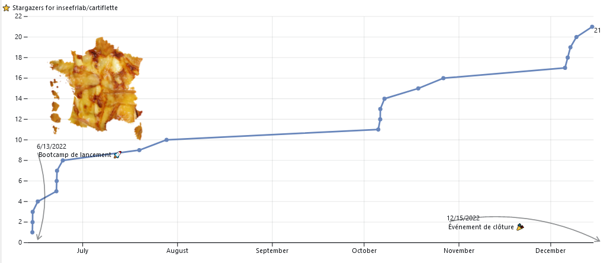
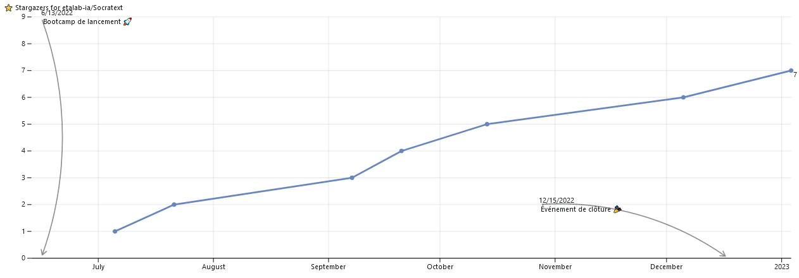
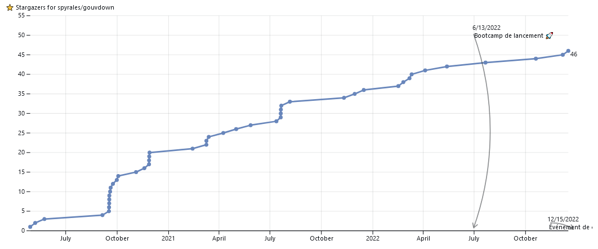
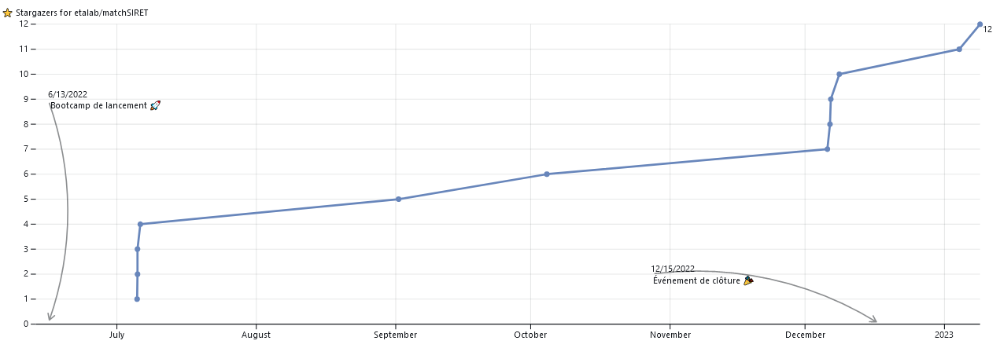

Vous désirez intégrer la liste de diffusion ? Un mail à ssphub-contact@insee.fr suffit
La rétrospective de l’année 2022 promettait une version plus personnalisée, inspirée des visualisations proposées par les réseaux sociaux pour synthétiser l’activité de leurs utilisateurs.
Cette newsletter un peu spéciale propose un retour sur la première année du réseau des data scientists de la statistique publique dont la préfiguration a commencé en mars 2022 et qui a été lancé officiellement en septembre. Vous pourrez retrouver à la fin de la newsletter des informations plus classiques: événements, retour sur les actions du réseau, formations, etc.
Elle permet aussi d’illustrer le potentiel d’outils qui ont été présentés dans la rétrospective de l’année 2022. Toutes les figures sont réactives, notamment quand vous passez votre souris dessus. Les principaux ingrédients qui ont été ici utilisés, et qui avaient été mentionnés dans la première partie de la rétrospective, sont Observable, Quarto et DuckDB. Les données sont stockées sur le système de stockage S3 du SSPCloud.
Ce notebook utilise certaines les fonctionalités d’Observable pour proposer des visualisations interactives de manière efficace.
Si vous êtes intéressés par le making-of de cette page web, cliquez sur le menu déroulant (partie plus technique).
Observable est à la fois un langage visant à simplifier l’usage de JavaScript pour mettre en oeuvre des visualisations interactives et une plateforme permettant de simplifier la mise à disposition de ces visualisations sous une forme de notebook.
Les statistiques de comptage sont enregistrées sous format Parquet sur le système de stockage S3 du SSPCloud. L’intégration native de DuckDB à Observable permet au navigateur web de lire et d’effectuer des manipulations de données à travers des requêtes SQL de manière très efficace. Sur ce sujet, outre la documentation officielle d’Observable, je recommande vivement le tutoriel d’Eric Mauvière.
La librairie Plot propose de nombreuses fonctionalités utiles pour construire des visualisations interactives. Sa logique est assez proche de celle des frameworks ggplot2 en R ou matplotlib en Python. Lorsque la librairie Plot n’est plus suffisante, comme pour le treemap sur cette page, le framework d3.js est utile.
L’intégration de figures construites à partir du langage Observable peut être faite de plusieurs manières:
- Utiliser
Quartoqui permet de créer une page web statique autosuffisante à partir d’une suite d’instructions dans des blocs{ojs}. Cette méthode est très intéressante pour l’intégration de figuresJavaScriptdans des sites web complets générés de manière automatique. Bien qu’initialement envisagée, cette méthode ne fait pas encore bon ménage avecHugoqui n’attend pas desQuarto Markdownmais desMarkdownclassiques - Utiliser la plateforme
observablehqpour créer un notebook proposant le code à l’origine des visualisations puis intégrer ces dernières par le biais d’<iframe>ou de l’intégration viaRuntime JS. Cela permet d’avoir ces visualisations sur une page statique sans stocker au même endroit le code ayant permis de les générer et permettant de les reproduire, qui n’intéresse pas nécessairement le même public.
La deuxième approche, celle de l’intégration depuis un notebook observable a été choisie. Ce notebook est disponible sur la plateforme pour les utilisateurs intéressés par la réutilisation des figures, des données sous-jacentes ou des utilitaires ayant permis d’aboutir à certaines visualisations. Le code source de cette page, disponible sur le Github inseefrlab/ssphub illustre la manière dont les figures peuvent être intégrées à un site web depuis la plateforme observablehq. Bien que j’ai privilégié la méthode Runtime JS, qui permet d’intégrer la visualisation sans le bandeau Observable sous la figure, pour certaines d’entre elles, j’ai dû utiliser la méthode <iframe> du fait de certaines limitations dans l’héritage de règles CSS aux svg générés par Plot qui affectaient la colorisation et donc la lecture de certaines figures.
L’année du réseau
Le réseau comporte deux canaux de communication: une liste de diffusion mail et un canal de discussions instantanées. Intéressons nous d’abord à la liste de diffusion mail !
Pendant l’année 2022, 7 newsletters ont été diffusées par mail. Chacune a permis d’augmenter sensiblement le nombre de personnes dans la liste de diffusion. A la fin de l’année, il y avait 312 inscrits1 dans la liste de diffusion.
Le réseau a organisé trois événements pendant l’année 2022. D’abord, avant l’été, deux open hours ont eu lieu. Cet événement informel prenant la forme de retour d’expérience a été l’occasion de discussions stimulantes autour de d’usage de la data science pour l’administration. En novembre, l’événement autour d’Observable animé par Nicolas Lambert a réuni près de 50 personnes.
Répartition des modes d’accès au réseau
Le réseau propose deux canaux de diffusion de l’information: une liste de diffusion par mail et un canal de discussion instantanée qui utilise la messagerie sécurisée de l’Etat Tchap. Environ 55% des membres de la liste de diffusion (soit plus de 180 personnes) sont également inscrits sur le canal de discussion instantanée.
Composition du réseau
La diffusion d’informations par le réseau a permis de réunir des data scientists de 27 organisations différentes. L’Insee, qui représente 47% de l’effectif du réseau, est majoritaire. Suivent dans le palmarès, les services statistiques du Ministère de la Santé (DREES) et du Ministère du Développement Durable (SDES).
Évolution de la composition du réseau
La diffusion progressive d’informations par le biais des newsletters a permis de diversifier progressivement la composition de la liste de diffusion. Alors que la première newsletter de l’année 2022 avait été diffusée auprès de 14 institutions, ce sont des agents de 27 organisations qui ont reçues la dernière.
Les événements organisés par le réseau ou les présentations spéciales, comme celle pour les administrateurs de l’INSEE en poste à l’ENSAE, ont également pu motiver des personnes à intégrer le réseau.
Programme 10%
Les membres du réseau des data scientists ont été particulièrement actifs dans le cadre du programme interministériel 10%, issu des recommandations d’un rapport INSEE-DINUM “Évaluation des besoins de l’État en compétences et expertises en matière de donnée”.
La saison 1 a donné sa chance à quatre projets, portés par différentes administrations. Si l’un d’eux existait déjà depuis plus de deux ans (projet Gouvdown), trois sont nés pour l’occasion, avec la mise en ligne de code immédiate (Cartiflette) ou postérieure au bootcamp de lancement (Socratext et matchSIRET) .
Tous les projets sont ouverts et disponible sur Github. Une statistique qui permet de représenter leur succès est le nombre de ⭐: c’est un peu un mélange entre un site en favori sous Firefox puisque cela permet de facilement retrouver un projet dans Github et le nombre de followers d’une page sur Facebook ou sur Twitter puisque cela permet de suivre l’activité d’un dépôt Github.
Cette visualisation fait appel à l’API Github. Si les figures ne s’affichent pas, cela peut être dû à un dépassement du nombre de requêtes par heure autorisées par l’API Github sans jeton. A l’heure actuelle, il n’existe pas encore de fonctionalité gratuite sous Observable pour stocker de manière sécurisée un jeton pour l’API Github.
Dérouler pour afficher une version non réactive

cartiflette
Socratext
Gouvdown
matchSIRETAutres actualités du réseau
Présentation de Gridviz par Julien Gaffuri
Pour rappel, le 20 Janvier 2023 de 11h à 12h30 Julien Gaffuri (Eurostat) viendra nous présenter la librairie open-source Gridviz. Réservez ce créneau pour découvrir cette librairie qui ouvre de nouvelles perspectives pour la mise à disposition de données géographiques !
Première place européenne au hackathon Big Data de l’ONU
Les résultats du hackathon big data de l’ONU, ayant eu lieu du 7 au Novembre 2022, ont été annoncés ! L’équipe Datadive - constituée de membres du réseau de l’INSEE, de la DGFIP et du CASD - est arrivée à la première place des équipes européennes 🎉.
Git et bonnes pratiques: des formations de formateurs prévus pour les statisticiens publics
Les nouvelles formations à Git et aux bonnes pratiques avec R, testées récemment à l’Insee et au service statistique du Ministère du Travail, la DARES, (voir newsletters de Novembre et Décembre), deviennent des formations nationales.
Pour pouvoir diffuser les bonnes pratiques favorisant le partage de codes et la qualité des projets statistiques, il est nécessaire d’avoir le plus d’enseignants possibles pour cette formation. Pour permettre cela, un appel à candidat pour une formation de formateurs a été diffusée à l’Insee et dans les services statistiques ministériels. Si vous êtes intéressés et ne l’avez pas reçu, n’hésitez pas à envoyer un mail à contact-ssphub@insee.fr.
En attendant, les supports de ces formations sont déjà disponibles sur inseefrlab.github.io/formation-bonnes-pratiques-git/ et sur inseefrlab.github.io/formation-bonnes-pratiques-R/. Les codes sources sont bien-sûr ouverts et disponibles sur Github, tant pour la première partie que pour la seconde. Ceux-ci sont construits collectivement, n’hésitez pas à suggérer des modifications depuis Github.
Un site web plus complet devrait prochainement voir le jour pour accompagner cette formation. En complément de celui-ci, des éléments peuvent déjà être trouvés dans le cours de 3e année de l’ENSAE sur la mise en production de projets data science et dans la documentation collaborative utilitR.
Notes de bas de page
Les actions de communication du mois de janvier ont permis d’augmenter sensiblement le nombre de personnes dans cette liste (340 début janvier). Un retour spécial sur le mois de janvier sera l’occasion idéale pour une autre rétrospective quantitative.↩︎